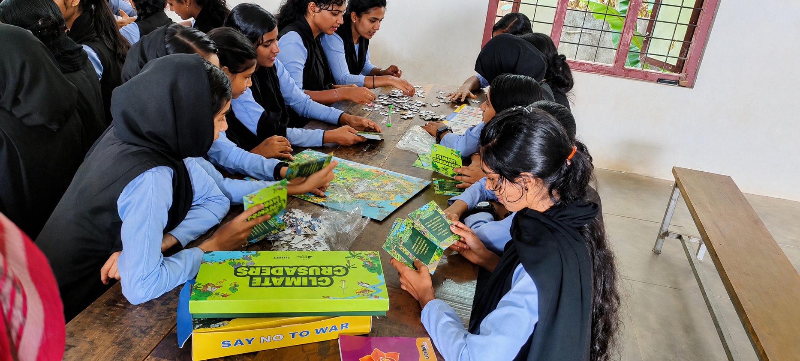
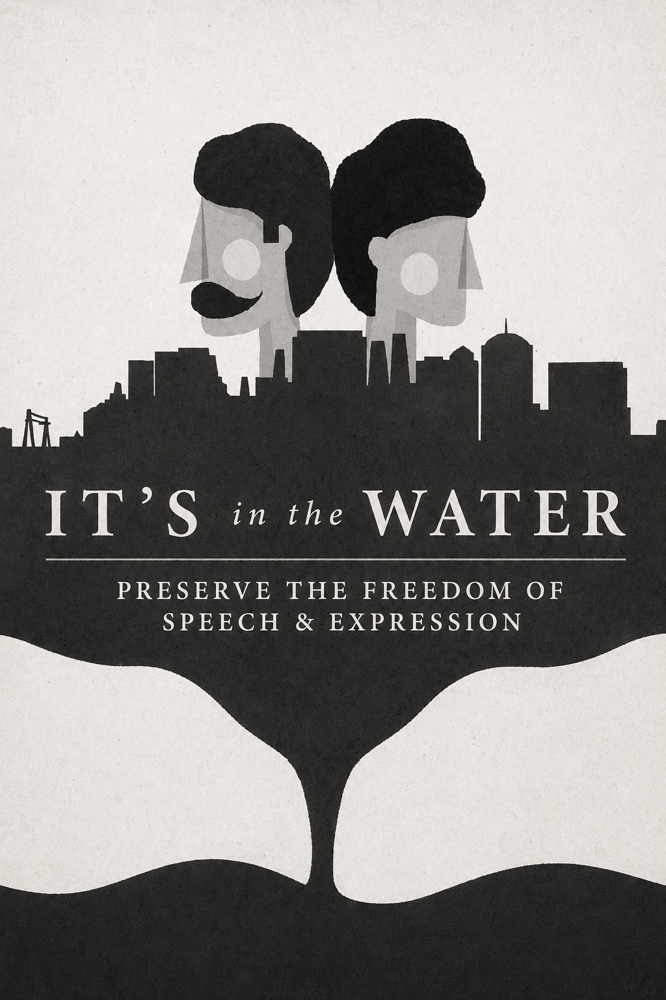
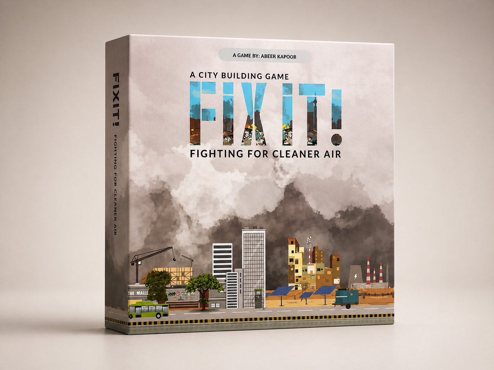

Commons governance, water allocation, and scarcity as a playable decision space — the tragedy of the commons, and the institutional designs that prevent it.

About the game
Water Management is a governance simulation for understanding collective resource management. Players take on roles as farmers, municipal authorities, industrial users, and environmental advocates — each competing for access to a shared water system under conditions of scarcity and seasonal variation.
The simulation surfaces the classic commons dilemma: individually rational behaviour that produces collectively catastrophic outcomes. But it goes further — presenting the institutional designs (Ostrom principles, local governance rules, price mechanisms) that have enabled communities to manage shared resources sustainably.
01 — Design
Built from engagement with water governance practitioners, irrigation department officials, and community water management organisations across water-stressed districts. Scenario data draws on actual allocation conflicts and institutional responses in India's river basins and groundwater zones.
The research question: what makes collective water governance possible? The design is grounded in Elinor Ostrom's empirical work on commons governance — translated into playable mechanics that reveal why some communities solve the commons problem and others don't.
02 — Development
A multi-stakeholder simulation structured around a shared water system under stress.
Farmers (upstream/downstream), municipal water authority, industrial users, environmental advocates, and gram panchayat water committee — each with distinct demands and governance standing.
Seasonal water allocation decisions across multiple rounds — with scarcity conditions that tighten over the simulation and force explicit trade-offs between users.
A mid-simulation intervention where players can propose and negotiate governance rules for the commons — and test whether they hold under pressure.
Facilitated simulation for 12–30 participants. 3–4 hours. Designed for water governance training, WASH programmes, and natural resource management courses.
03 — Deployment
Water Management is deployed in water governance training, WASH programmes, and natural resource management contexts.
Used in state water department training to build systems-level water governance literacy alongside technical content.
Deployed in water, sanitation, and hygiene programmes as an experiential module on community water governance.
Integrated into natural resource management curricula as an applied governance simulation on commons and collective action.
Outcomes
Participants build water governance literacy — how commons work, why they fail, and what makes sustainable management possible.
Tragedy of the commons, Ostrom principles, water rights, collective action — terms become usable analytical frameworks.
Playing under genuine scarcity builds intuition for why water conflicts are hard to resolve — and why governance matters.
Participants practice designing governance rules that enable collective management under competitive pressure.
Groups develop understanding of water systems as social-ecological systems — not just technical infrastructure problems.


Run Water Management with your water governance programme, WASH initiative, or natural resource management training. We facilitate, or we train your team.
Get in touch →
Panchayat governance — rural planning, budgets, and the real trade-offs of local government.

Community water crisis — governance, behaviour, and risk as a civic story and system.

Institutional systems repair — diagnose constraints and test interventions under governance trade-offs.